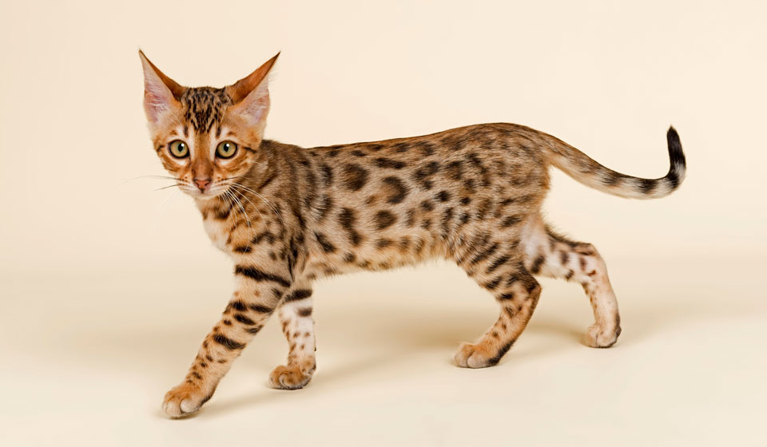

Бенгальские кошки по характеру – уверенные в себе, деловитые, любознательные, и верные компаньоны. Они хорошо уживаются с другими домашними животными и с удовольствием участвуют в семейной жизни. Бенгалы очень ласковые кошки, но «сидеть на ручках» они будут только тогда, когда сами этого захотят. Большую часть времени бенгальская кошка предпочитает играть, бегать, лазать и исследовать территорию. Она стремится постоянно находиться в одном помещении с владельцем, но при этом невероятно активна. Она всегда предпочтет неподвижной игрушке такую, которая движется быстро и непредсказуемо.
Согласно описанию породы, бенгальская кошка относится к короткошерстным, размеры – от среднего до крупного. Тело на вид изящное, но в действительности очень мускулистое и плотное. Голова по сравнению с телом невелика. Согласно стандарту, уши бенгальской кошки небольшие, округлые, с заостренными кончиками. Глаза довольно крупные, овальной формы. Шерсть бенгала необыкновенно мягкая на ощупь, по текстуре мех этой кошки напоминает мех некоторых небольших диких животных. В окрасе различается два основных типа рисунка: мраморный и пятнистый. В обоих рисунках ярко выражен цветовой контраст.
